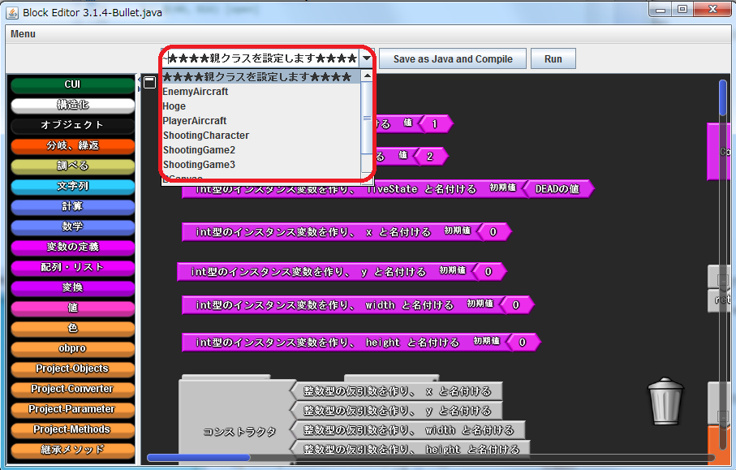
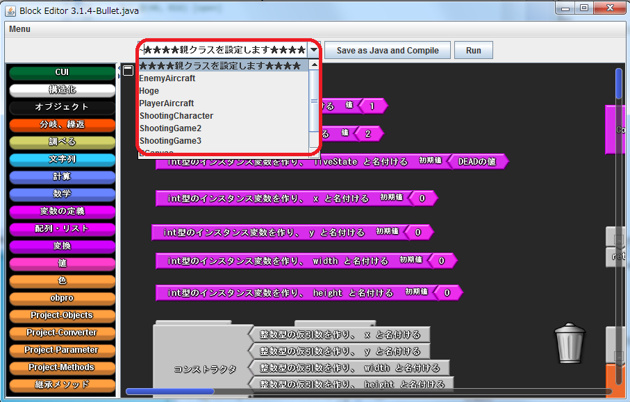

親クラスの指定方法
「Save as Java」ボタンの左側にあるプルダウンメニューをクリックし，任意のクラスを指定することで親クラスを指定することができます．

親クラスのメソッドを利用する
継承した親クラスのメソッドは，「継承メソッド」ファクトリから利用することができます．
「Save as Java」ボタンの左側にあるプルダウンメニューをクリックし，任意のクラスを指定することで親クラスを指定することができます．

継承した親クラスのメソッドは，「継承メソッド」ファクトリから利用することができます．